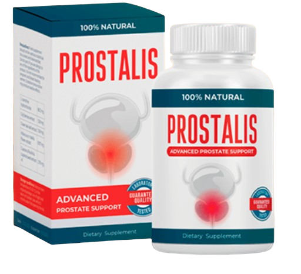

SCHNELLE BEWÄLTIGUNG VON PROSTATAENTZÜNDUNG
Von den führenden Andrologen gebilligt. Eine 100-prozentige Qualitätsgarantie, zusammengesetzt aus naturreinen Komponenten.

Normalpreis: 98 EUR
Sie sparen 50%!
Nur 49 EUR
Sexuelle Funktionsbeeinträchtigung, die Unfähigkeit, diese Funktion aufrechtzuerhalten oder zu so einer Stärke zu erzielen, die für einen intakten Geschlechtsverkehr notwendig ist.
Bösartige Erkrankung, die für Männer im Alter ab 45 bis 50 Jahre typisch ist. Sie lässt sich schlecht heilen und nimmt den Lebensstandard erheblich ab.
Bösartige Neubildung, die durch eine Prostatadrüsenepithel-Zelltransformation verursacht wird.
Klassische und oft unangenehme Methoden umfassen: Prostatamassage, Lasertherapie, Steroide, Ballondilatation.
PROSTALIS, ein organisches Präparat, wurde zum ersten Mal in einer wissenschaftlichen Konferenz der Amerikanischen Urologischen Gesellschaft vorgestellt.
An der experimentellen Therapie nahmen mehr als 80.000 Männer mit Prostataentzündung teil. Die Laborbefunde einer neuen amerikanischen Innovationsentwicklung zeigten beeindruckende Ergebnisse:
Fühlten nicht mehr Leisten- und Kreuzschmerzen, -brennen und -schneiden.
Wurden Prostataentzündungen und Ödeme los.
Fühlen erleichtertes Wasserlassen.
Verschwanden Ejakulation- und Erektionsprobleme.
Basierend auf den Ergebnissen unserer Umfrage von Urologen und Sexologen:
Fachliche Stellungnahme:
"Das Entfernen der Entzündung und das Normalisieren der Größe der Prostata kann die männliche Gesundheit wiederherstellen. Mit einer Wahrscheinlichkeit von 98% brauchen Sie keine anderen Medikamente gegen erektile Dysfunktion! Wenn Prostatitis beseitigt wird, kann die Potenz sich natürlich wiederherstellen."
- Eduard Schubert (Arzt, Urologe-Androloge)
Völlig natürliche Zusammensetzung. Funktioniert unabhängig von der Phase der Prostatitis.
Insgesamt für einen einzelnen Kurs hilft Prostalis: Symptome zu beseitigen, Erektion wiederherzustellen und ein jahrelang anhaltendes Ergebnis zu sichern.
Aktionspreis:
49 EUR